扉页
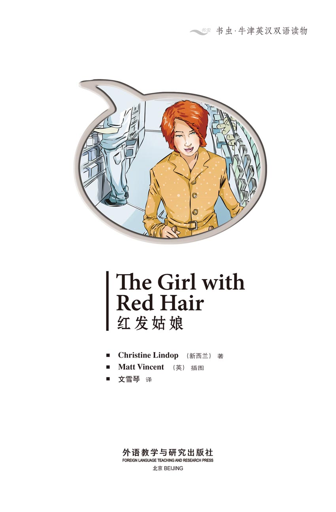
版权页
京权图字：01-2013-7802
Published by arrangement with Oxford University Press for sale in the People's Republic of China only and not for export therefrom. This edition is for sale in the mainland of China only, excluding Hong Kong SAR, Macao SAR and Taiwan.
© Oxford University Press 2009
Oxford is a registered trademark of Oxford University Press
图书在版编目（CIP）数据
红发姑娘：英汉对照／（新西兰）林多普（Lindop, C.）著；（英）文森特（Vincent, M.）绘；文雪琴译．—北京：外语教学与研究出版社，2013.11
（书虫·牛津英汉双语读物）
书名原文：The girl with red hair
ISBN 978-7-5135-3780-3
Ⅰ．①红… Ⅱ．①林…②文…③文… Ⅲ．①英语—汉语—对照读物②短篇小说—新西兰—现代 Ⅳ．①H319.4：I
中国版本图书馆CIP数据核字（2013）第271153号
出版人 蔡剑峰
责任编辑 杨雅琼
封面设计 蔡 颖
出版发行 外语教学与研究出版社
社 址 北京市西三环北路19号（100089）
网 址 http://www.fltrp.com
版 次 2013年12月第1版
书 号 ISBN 978-7-5135-3780-3
制售盗版必究 举报查实奖励
版权保护举报电话：（010）88817519
内容简介
内容简介
马克非常喜欢他在梅森百货商店的工作。他观察众人，并提出问题。那个男人把什么放进了自己的包里？为什么那个女人穿了两件外套？那两个男孩为何总是东张西望？马克提出问题，接着找出答案。
然后有一天，马克看见了一位红发姑娘，从此无法忘怀。现在他有几个不同的问题了：这个红发姑娘是谁？那个小男孩是她的孩子吗？那个穿着黑色夹克的英俊男人是谁？问题有很多，而马克不是每次都能找到正确的答案。
但是他想再次看到那双美丽的绿眼睛……
THE GIRL WITH RED HAIR
THE GIRL WITH RED HAIR
Mark likes his work in Mason's store. He watches people, and he asks questions. What is that man putting into his bag? Why is that woman wearing two coats? Why are those two boys looking around all the time? Mark asks questions, and then he finds the answers.
Then one day Mark sees a girl with red hair, and he can't forget her. Now he's got some different questions. Who is the girl with red hair? Is the little boy her baby? Who is the man in the black jacket – the good-looking man? There are a lot of questions, and Mark doesn't always find the right answers.
But he wants to look into those beautiful green eyes again...
目录
1 Wow!
1
Wow!
My name is Mark Sellers. I'm twenty-two years old, and I work in security in Mason's store. You can get everything here – books, TVs, hats, flowers, sandwiches, beds, bicycles... It's interesting work, and I like it. Sometimes I walk around in the store, and sometimes I work in the office.
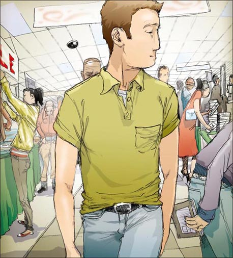
Leon and Shami work in security too. I like working with them.
'Look at this woman,' Leon says. 'Which hat is best for her – blue or black?'
I look at the woman on the screen.
'Oh – the black hat,' I say.
'No!' says Shami. 'The blue hat is nicer.'
We watch and wait. In the end the woman takes the blue hat.
'Hurray!' says Shami. 'You two know nothing about hats.'
Yes, it's interesting work.
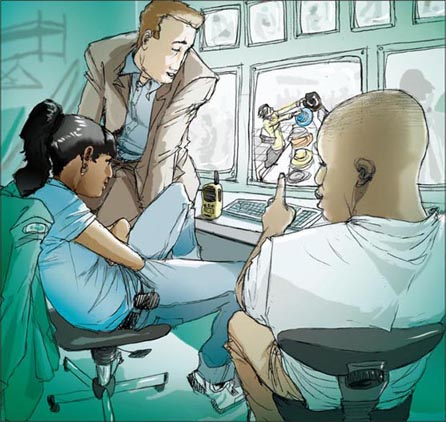
Today I'm watching the screens. I'm looking at a man with a big bag. He's got a clock in his hand. He looks around slowly. Now he's got a clock in his bag. The man walks to the door. I talk on my radio. Shami walks quietly behind the man. When he gets to the door, she puts her hand on his arm.
'Please come with me,' she says.
Good. I go back to the screens.
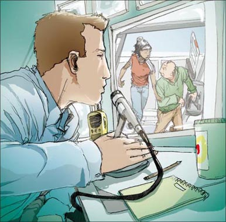
And then I see her.
'Wow! Who's that girl?'
'What girl? I can see lots of girls,' Leon says.
Now the picture on the screen is bigger.
'That girl there – with red hair.'
Leon looks at the screen.
'Hmm – yes, she's OK. But who is she? I don't know. Why don't you go and ask her, Mark?'
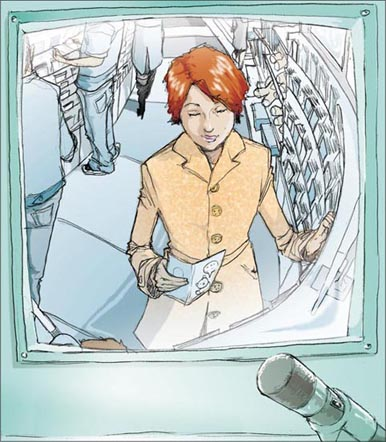
He laughs and walks away, but I can't stop looking at the screen. Who is that beautiful girl? What is her name? I want to meet her.
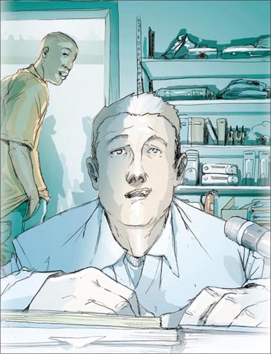
Every day I look for the girl with red hair, but I do not see her.
'Where is she?' Leon says every day. 'Where's the girl with red hair, Mark? What's her name?'
'Oh stop it, Leon,' says Shami. 'Mark can dream, can't he?'
I laugh at first, but after three days, I want to hit Leon. Then, suddenly, I see her again.
I am watching a woman with a big bag. And then, there she is – the girl with red hair. She's got green eyes too. But there is a baby with her, a little boy. They are looking at a book about trains.
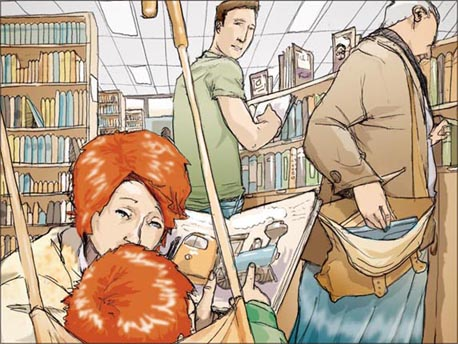
'Look, Greg,' she says. 'Look at the big train.'
The little boy smiles. He's got red hair and green eyes too. Her baby. So – has she got a husband? A boyfriend? I look at her beautiful green eyes again, and then I go back to work. But there are lots of questions in my head.
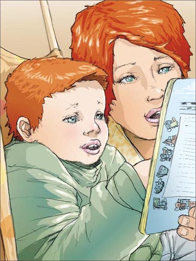
She comes to the store on Wednesday mornings. She usually arrives at about eleven o'clock.
'How's your girl?' asks Leon.
'She's not my girl,' I say. 'I don't know her name. Her little boy's name is Greg, but she's – the girl with red hair.'
'Well, let's give her a name,' says Leon. 'What do you think, Shami?'
'Hmm – Scarlet! Her name is Scarlet,' says Shami.
'Apples are red,' says Leon. 'Apple is a nice name—'
Then he looks at my face, and runs out the door.
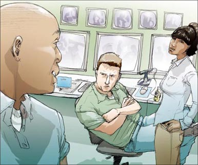
2 Boohoo
2
Boohoo
Next Wednesday I am in the store when the girl with red hair comes in with Greg. She stops and looks at a picture. Greg takes his hat off and drops it. I pick up the hat and go over to her.
'Excuse me,' I say. 'Is this your little boy's hat?'
She smiles at me.
'Oh, thank you,' she says. 'Greg, look, it's your hat.'
Greg laughs. She puts out her hand and takes the hat from me. Is she wearing a ring? No, there is no ring on her hand.
Wednesday is the best day of the week, I think.
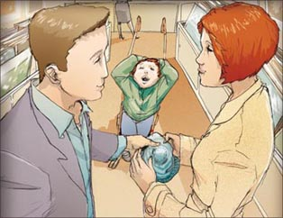
Ten minutes later, I am near the flowers when Leon speaks to me on my radio.
'Mark, go to the door!' he says. 'You must stop her – the girl with red hair.'
'What? What's happening?' I say.
'Go quickly – now. It's the little boy – he's got one of the red planes.'
Those red planes! Children take them all the time, because they like the colour. Then they get to the door and the alarm rings. Children cry, and their mothers get angry. I hate those planes!
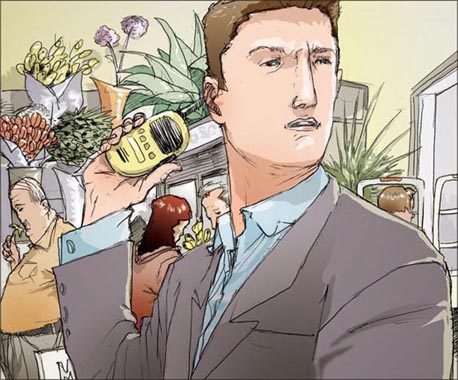
When I get to the door, the alarm is ringing. The girl with red hair is standing there, and her face is red.
'What's happening?' she says.
'Please come back into the store for a minute,' I say.
We go back into the store, and the alarm stops.
'This young man has got the answer, I think. Where's the plane?' I say to Greg.
'Plane,' says Greg, and he waves a little red plane at us.
'Oh, I am sorry!' she says.
'It's all right,' I say. 'It happens all the time. Can I have the plane? Good boy!'
'Thank you very much,' says the girl with red hair. But the alarm is ringing again. I must go.
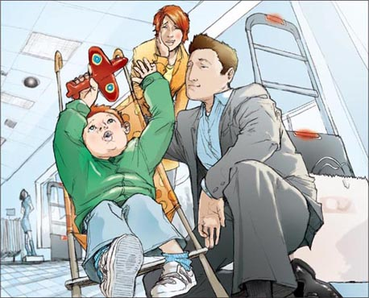
I walk into the office upstairs. Shami is watching the screens. She stops and looks at my face.
She says nothing, but she smiles. Then she goes back to work.
I look at the screens too – but I am dreaming.
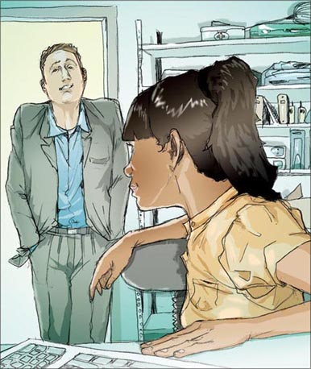
I'm happy. I'm really happy. But how can I meet her again? I think about this for the next six days, but I can't find any answers. Then it's Wednesday again.
I'm sitting in the office watching the screens. Ten o'clock comes and goes, then eleven o'clock. I can't see her.
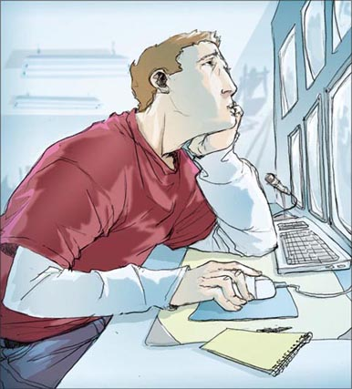
I look on every screen in the store. In the end I see her near the door. She's looking at her watch, and talking to Greg. Is she waiting for somebody?
Perhaps she's meeting somebody. Perhaps she's late. Perhaps her mother is coming. Perhaps—
But now she's waving at somebody.
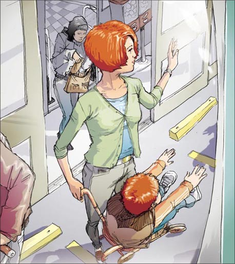
A good-looking man in a black jacket walks up to the girl with red hair and kisses her. Greg laughs, and the man picks him up and kisses him too. Is he the baby's father? Of course he is. Anybody can see that.
I don't want to look, but I can't take my eyes away from the screen. Then they all go down the road, away from the store.
I look around the room. Leon and Shami are in the store, and the room is very quiet. It feels cold.
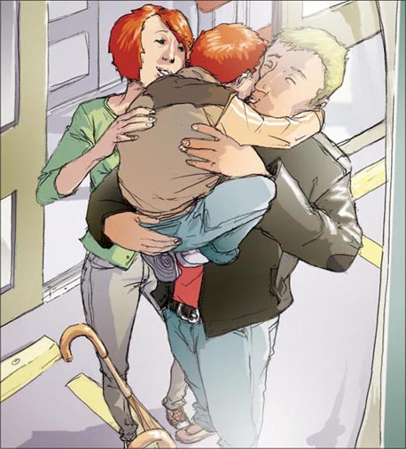
Then Leon and Shami come in. 'Now that's not a happy face,' Shami says. 'What's the matter?'
I tell them. I tell them about the girl with red hair, and Greg, and the good-looking man – and the kiss.
Leon looks at my face and thinks for a minute.
'Look, Mark,' he says. 'It's a dream, that's all. You see a nice girl, you think about her, you talk to her – and one day her boyfriend arrives. Boohoo. You stop dreaming. But there are always more girls.'
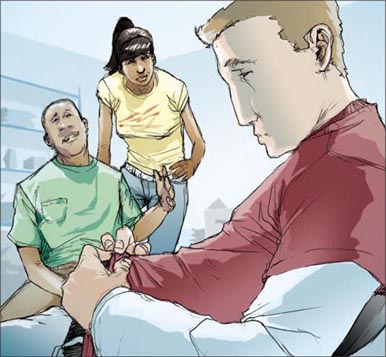
'Yes, but—' I say, and then I stop.
'But they're not the girl with red hair, right?' says Leon. 'But she's got a boyfriend. You need a different girl, Mark – a girl without a boyfriend. Why don't you come out with us tonight? We're going to Ocean Blue. It's a wonderful club, and there are lots of nice girls there.'
I don't really want to go, but I don't want to stay at home and do nothing.
'OK, then,' I say.
'Good man,' says Leon. 'See you there at nine.'
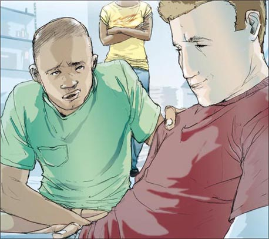
3 Yay!!
3
Yay!!
The club is dark. There's a lot of noise, and a lot of people, but the music is good.
Leon is there with his girlfriend Ellie. I talk to them and their friends. I'm feeling good. Perhaps tonight I can forget about everything. Leon and Ellie are dancing, so I go to get a drink.
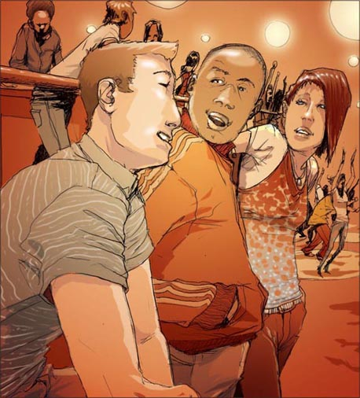
Leon is right about one thing – there are a lot of nice girls at Ocean Blue. Tall girls, interesting girls, girls with black hair, blue hair – and red hair.
Red hair? I'm waiting for my drink, and I'm standing next to the girl with red hair. No, two girls with red hair. Is this really happening?
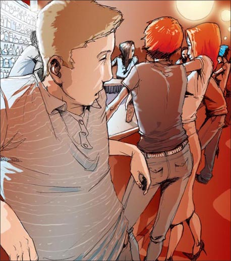
The girl with red hair looks at me and smiles. 'Just a minute,' she says. 'Don't I know you?'
She's talking to me! Why can't I say anything?
'In the store,' I say at last. 'In Mason's store. With your little boy. And the red plane.'
The girl with red hair laughs.
'Oh, with Greg!' she says. 'I remember. But he isn't my baby – he's Claire's. This is my sister Claire – she's his mother.' The second girl with red hair waves at me.
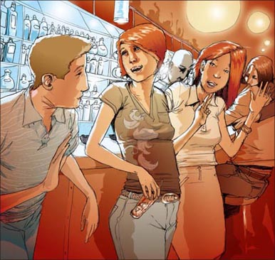
'But I always see you with him,' I say.
'I look after Greg on Wednesday mornings, and we always go to Mason's,' she says. 'Then I meet Claire. Well, usually, that is. But not this week.'
Just then a good-looking man in a black jacket arrives. 'Sorry I'm late,' he says, and kisses Claire. 'Hi, Kate.'
Claire smiles at him, and the girl with red hair says hello. I'm starting to understand. This is Claire's husband, and Greg's father. And the girl with red hair is called Kate.

My face is red.
'Hey, I'm sorry,' I say to Kate. 'It's – well, Greg's got your hair and your eyes. But I can see now. He's got Claire's hair and eyes. Of course.'
'It's OK,' Kate says. 'It happens all the time. People say, "Isn't your little boy happy!" And sometimes I just say, "Yes, he is." '
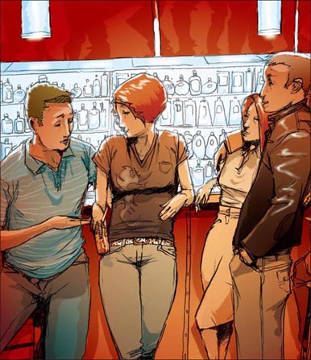
Claire and her husband go off to dance, and I get Kate a drink.
'Here you are, Kate. My name's Mark.'
'Thanks, Mark,' she says. 'So you work in Mason's.'
'Yes,' I say. 'I work in security. I look for little boys with red planes, and girls with red hair.'
'And do you find them?'
'I find lots of little boys with red planes.'
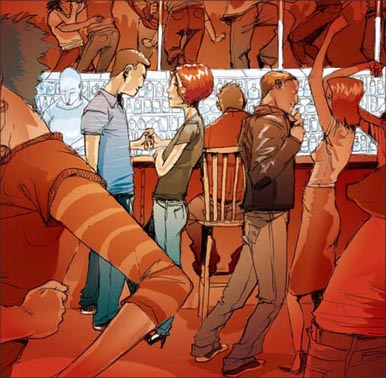
'And the girls?'
'Just one.'
Now I have the answers to my questions. The girl with red hair is Kate. She hasn't got a husband, and she hasn't got a baby. And those green eyes are smiling at me. Yes, Wednesday really is the best day of the week.
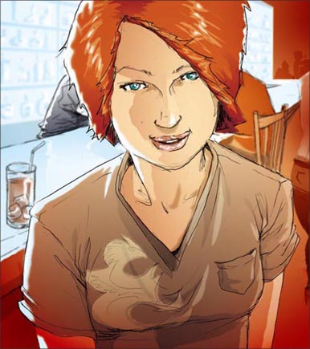
GLOSSARY 词汇表
GLOSSARY
词汇表
alarm n. something that makes a loud noise when something is wrong 报警器
around adv. in different places 四处，到处
baby n. a very young child 婴儿，小宝宝
boyfriend/girlfriend n. a boy/girl you like and go out with 男朋友/女朋友
club n. a place where you go to dance, listen to music, etc. 夜总会，俱乐部
dream v. to hope for something nice in the future 梦想，渴望
drop v. to let something fall 使掉下，投下
good-looking adj. nice to look at 好看的，（男人）英俊的
husband n. the man that a woman is married to 丈夫
jacket n. a short coat 夹克，短上衣
kiss v. to touch someone lovingly with your lips 吻，亲吻
look after to take care of somebody 照看，照料
music n. what you make when you sing, play the piano, etc. 音乐
pick up to take something with your hand 拾起，捡起
radio n. a machine that lets you hear somebody's voice from far away 无线电设备
ring v. make a sound like a bell (a telephone rings) 响铃 n. a circle of metal that you wear on your finger 戒指
screen n. the flat part of a TV where you see pictures （电视机）屏幕
security n. the people who keep things safe 保安，保安人员
store n. a big shop that sells a lot of different things （百货）商店，商场
wave v. to move your hand to say hello or goodbye to somebody 挥手（以示意）
ACTIVITIES 阅读练习
The Girl with Red Hair
ACTIVITIES
阅读练习
ACTIVITIES
Before Reading
1 Look at the front and back covers of the book and choose the correct endings for these sentences.
1）This story is about...
a □ work and friends.
b □ love and work.
c □ friends and children.
2）Mark sees the girl...
a □ on TV.
b □ in a house.
c □ in a store.
2 Guess what happens. In the story...
1）Mark's friends talk to the girl.
Yes □／No □
2）Mark's friends help him.
Yes □／No □
3）the girl does not speak to Mark.
Yes □／No □
4）Mark meets the girl at a club.
Yes □／No □
5）the girl has got a boyfriend.
Yes □／No □
6）the girl starts work in the store.
Yes □／No □
ACTIVITIES
While Reading
1 Read the first half of Chapter 1, then answer these questions.
1）Where does Mark work?
2）Who knows most about hats?
3）How does Mark talk to Shami?
4）Who does Mark see on the screen?
2 Read the second half of Chapter 1. Are these sentences true (T) or false (F)?
1）Mark wants to meet the girl with red hair.
2）Shami wants to hit Leon.
3）The girl and the baby have got blue eyes.
4）The girl comes to the store on Wednesdays.
5）Leon knows the girl's name.
3 Read the first half of Chapter 2 and answer the questions.
Who...
1）... drops his hat?
2）... likes Wednesdays?
3）... tells Mark about the plane?
4）... has got a red face?
5）... is watching the screens in the office?
4 Read the second half of Chapter 2. Now answer these questions.
1）Where is Mark on Wednesday morning?
2）What is the girl looking at?
3）Who is the man in the black jacket?
4）Who tells Mark, 'It's a dream'?
5 Read the first half of Chapter 3, then match the sentence halves to make four complete sentences.
1）Ocean Blue is a wonderful club...
2）Mark doesn't want to go out...
3）Mark is feeling good...
4）Mark wants to forget about everything...
a but he doesn't want to stay at home and do nothing.
b but then he sees two girls with red hair.
c because he likes the music and the people at the club.
d and there are lots of nice girls there.
6 Guess what happens next in the story.
1）The two girls are sisters.
Yes □／No □
2）The girl is the baby's mother.
Yes □／No □
3）The girl's sister is the baby's mother.
Yes □／No □
4）The man in the black jacket is the girl's husband.
Yes □／No □
5）The girl hasn't got a husband.
Yes □／No □
6）Mark gives the girl some flowers.
Yes □／No □
ACTIVITIES
After Reading
1 What do you know about Kate and Mark? Choose the right words for each person, and then write a description.
work/Mason's store
red hair/green eyes
twenty-two years old
sister Claire/little boy Greg
work/Leon and Shami
like working/security
look after Greg/Wednesdays
2 Put these sentences in the correct order. Number them 1-10.
a □ The girl leaves with the man and Greg.
b □ The good-looking man (Claire's husband) arrives.
c □ Leon says, 'Come with us to Ocean Blue.'
d □ Mark meets her sister Claire.
e □ Mark tells his friends about the boyfriend.
f □ At the club, Mark sees two girls with red hair.
g □ Mark gets Kate a drink, and she smiles at him.
h □ A good-looking man meets her and kisses her.
i □ The girl with red hair tells Mark about her family.
j □ The girl is waiting by the door of the store.
3 Who says this? Who do they say it to?
1）'You two know nothing about hats.'
2）'Look at the big train.'
3）'Apple is a nice name—'
4）'Oh, I am sorry!'
5）'Sorry I'm late.'
6）'Just one.'
4 Complete this summary of the story. Use these words:
club door every feels good-looking husband kisses plane sorry stops
Mark sees a beautiful girl with red hair in Mason's store. She comes to the store ________ Wednesday with a little boy called Greg. One day Greg takes a little________, and Mark ________ the girl and Greg near the door. Her face is red and she is very ________. The next Wednesday a ________ man meets her and Greg at the ________ of the store and ________ them. Mark is not happy. That night he goes to the Ocean Blue ________. There he meets the girl with red hair, Kate, and her sister Claire. Greg is Claire's baby, and the good-looking man is her ________. Kate hasn't got a boyfriend. Mark ________ very good.
TRANSLATION 参考译文
TRANSLATION
参考译文
The Girl with Red Hair
红发姑娘
我叫马克·塞勒斯，22岁，在梅森百货商店做安保工作。你能在梅森百货买到所有的东西——书、电视机、帽子、花、三明治、床、自行车……这份工作很有意思，我很喜欢。有时候我会在店里四处巡视，有时候则在办公室里工作。
利昂和沙米也在保卫处工作。我喜欢和他们共事。
“看这个女人，”利昂说，“哪顶帽子最适合她——蓝色的还是黑色的？”
我看了看屏幕上的女人。
“嗯——黑色的帽子。”我说。
“不！”沙米说，“那顶蓝色的帽子更好看。”
我们注视着屏幕，等着瞧。最后那个女人选择了蓝色的帽子。
“万岁！”沙米说，“你俩对帽子一窍不通。”
没说错吧，这是一份有意思的工作。
今天由我负责监视屏幕。我注意到一个拎着大包的男人。他拿了一个时钟在手里。他慢慢地望了望四周，之后钟就在他的包里了。这个男人向门口走去。我通过无线电说了几句。沙米悄悄走在这个男人后面。当他走到门口时，她一把抓住了他的胳膊。
“请跟我来。”她说。
好。我继续监视屏幕。
然后我就看见了她。
“哇！那个姑娘是谁？”
“什么姑娘？我能看到许多姑娘。”利昂说。
现在屏幕上的画面放大了。
“那边的那个姑娘——一头红发的。”
利昂看了看屏幕。
“嗯——是的，她还行。不过她是谁？我不知道。马克，你为什么不去问问她呢？”
他笑着走开了，但我却忍不住一直盯着屏幕看。那个美丽的姑娘是谁？她叫什么名字？我想结识她。
我每天都在寻找那个红发姑娘的身影，却总看不到她。
“她在哪儿？”利昂每天都在念叨，“那个红发姑娘在哪儿，马克？她叫什么名字？”
“哎，别说了，利昂，”沙米说，“马克总能做做梦吧，不是吗？”
开始时我会笑笑，但三天过后，我就想揍利昂一顿。之后，我突然再次看到了她。
我正盯着一个拿着大包的女人，然后就看到了她——那个一头红发的姑娘。她还有着一双绿色的眼睛。但她身旁有个小宝宝，是个小男孩。他们正在看一本关于火车的书。
“看，格雷格，”她说，“看这列大火车。”
小男孩笑了。他也有着红色的头发和绿色的眼睛。她的宝宝。那么——她有丈夫吗？或者有男朋友？我再次看了看她那双美丽的绿眼睛，然后继续工作。但我的脑子里有很多疑问。
她总是在周三上午来百货商店，通常在11点左右到。
“你那个姑娘怎么样了？”利昂问。
“她不是我的姑娘。”我说，“我不知道她的名字。她的儿子叫格雷格，但她是——红发姑娘。”
“哦，我们来给她取个名儿吧。”利昂说，“你觉得呢，沙米？”
“嗯——斯卡莉特！叫她斯卡莉特吧（译注：“斯卡莉特”[Scarlet]意为“鲜红的”）。”沙米说。
“苹果是红色的，”利昂说，“阿普尔（译注：Apple作人名时译为阿普尔，此处取其双关含义）是个不错的名字——”
他看了看我的脸色，然后跑出门去。
接下来的周三，当那个红发姑娘带着格雷格出现时，我正在店里巡视。她停下来看一幅画。格雷格脱下自己的帽子，丢在了地上。我捡起帽子，向她走去。
“打扰了，”我说，“这是你儿子的帽子吗？”
她对我微笑。
“嗯，谢谢你。”她说，“格雷格，看，这是你的帽子。”
格雷格笑了。她伸出手从我这儿接过帽子。她戴着戒指吗？没有，她手上没有戒指。
周三是一周中最美妙的一天，我想。
十分钟后，我来到花摊旁边，这时利昂通过无线电跟我说话。
“马克，到门口去！”他说，“你必须拦住她——那个红发姑娘。”
“什么？发生了什么事？”我问。
“快去——马上。是那个小男孩——他拿了一架红色飞机。”
那些红色的飞机！孩子们总喜欢拿这些飞机，因为他们喜欢这个颜色。然后他们走到门口时，警报器就会响起来。孩子们会哭，妈妈们则会发脾气。我讨厌这些飞机！
当我赶到门口时，警报器正在响。红发姑娘站在那里，脸红红的。
“发生了什么事？”她问。
“请先暂时回到店里。”我说。
我们返回商店后，警报器就停止了鸣响。
“我觉得这小家伙知道是怎么回事儿。飞机在哪儿呢？”我对格雷格说。
“飞机。”格雷格说着，朝我们挥了挥手中的红色飞机。
“呀，我真是抱歉！”她说。
“没关系。”我说，“这是常有的事儿。能把飞机给我吗？真是个好孩子！”
“太感谢你了。”红发姑娘说。但这时警报器又响了。我必须走了。
我走进楼上的办公室。沙米正观察着屏幕。她停下来，看了看我的脸。
她没说什么，但她笑了。然后她又重新投入工作。
我也看着屏幕——但我在做着美梦。
我很高兴，真的很高兴。但我怎么才能再见到她呢？接下来的六天我都在想着这个问题，但我没能找到任何答案。然后就又到周三了。
我坐在办公室里注视着屏幕。10点钟到了，又过了。然后11点了。我没能看见她。
我看了店里所有的屏幕，最后看见她在大门附近。她一边看手表，一边同格雷格说话。她是在等谁吗？
也许她要和某人会面。也许她迟到了。也许她妈妈要来。也许——
但现在她正朝某个人挥手。
一个穿着黑色夹克的英俊男人走向红发姑娘，亲了她一下。格雷格笑了，男人把他抱起来也亲了亲。他是这个宝宝的父亲吗？当然他是。任谁都能看出来。
我不想看了，但我无法把视线从屏幕上移开。接着他们一起离开商店，走远了。
我环顾房间。利昂和沙米都在商店里巡视。房间里很安静，感觉好冷。
这时利昂和沙米走了进来。“你看上去可不太高兴。”沙米说，“怎么了？”
我告诉了他们。我说了那个红发姑娘，还有格雷格，还有那个英俊男人——还有那个亲吻。
利昂看了看我的脸，想了一会儿。
“瞧，马克，”他说，“这是一场梦，仅此而已。你看见了一个好姑娘，你成天想着她，你跟她说了话——然后有一天她男朋友来了。呜呜。虽然你的梦做不成，但总会有其他姑娘的。”
“是的，不过——”我欲言又止。
“不过她们都不是那个红发姑娘，对不对？”利昂说，“但她已经有男朋友了。你需要找个别的姑娘，马克——一个没有男朋友的姑娘。不如你今天晚上跟我们一起出去玩吧？我们要去‘蓝色海洋’。那是个很棒的夜总会，里面有很多不错的姑娘。”
我不太想去，但我又不想呆在家里无所事事。
“那好吧。”我说。
“好兄弟，”利昂说，“9点我们在那里碰头。”
夜总会里很昏暗。很吵，而且人很多，但音乐不错。
利昂和他的女友埃莉在那里。我同他们以及他们的朋友聊天。我感觉很好。也许今晚我能忘掉一切。利昂和埃莉在跳舞，于是我去要一杯酒。
利昂说对了一件事——“蓝色海洋”里确实有很多不错的姑娘，高挑的、有趣的、黑发的、蓝发的——还有红发的。
红发？我在等我的酒，旁边就有一个红发姑娘。不，是两个。这是真的吗？
红发姑娘看着我，笑了。“等等，”她说，“我不是见过你吧？”
她在跟我说话！我怎么一句话都说不出来？
“在百货商店里，”我终于开了口，“梅森百货商店，跟你儿子一起，还有那架红色飞机。”
红发姑娘笑了。
“哦，同格雷格一起！”她说，“我想起来了。不过他不是我的宝宝——他是克莱尔的。这位是我姐姐克莱尔——她才是格雷格的妈妈。”另一个红发姑娘朝我招了招手。
“但我总是看见你跟格雷格在一起。”我说。
“周三的上午都由我来照顾他，而且我们总是去梅森百货。”她说，“然后我同克莱尔碰头。嗯，大多数时候是这样。不过这礼拜不是。”
这时来了一个穿着黑色夹克的英俊男人。“对不起，我迟到了。”他说着，吻了吻克莱尔，“嗨，凯特。”
克莱尔对他微笑，红发姑娘则同他打了个招呼。我开始明白过来了。这是克莱尔的丈夫，格雷格的父亲。而红发姑娘名叫凯特。
我脸红了。
“嘿，我很抱歉，”我对凯特说，“这个——唉，格雷格的头发和眼睛跟你一样。但我现在能看出来了。他的头发和眼睛是跟克莱尔一样。理所当然。”
“没关系，”凯特说，“这是常有的事。人们总说，‘你儿子真开心！’有时候我只是回答，‘是啊，他是很开心。’”
克莱尔和她丈夫去跳舞了，我给凯特要了一杯酒。
“给，凯特。我叫马克。”
“谢谢，马克，”她说，“那么你在梅森百货工作。”
“是的，”我说，“我在保卫处工作。我总是寻找那些拿着红色飞机的小男孩，还有红头发的姑娘们。”
“那你找到他们了吗？”
“我找到了很多拿着红色飞机的小男孩。”
“姑娘们呢？”
“只找到了一个。”
现在我的问题都有了答案。红发姑娘叫凯特。她没有丈夫，也没有孩子。而且她正用她那双带笑的绿眼睛看着我。没说错吧，周三真是一周中最美妙的一天。
封底
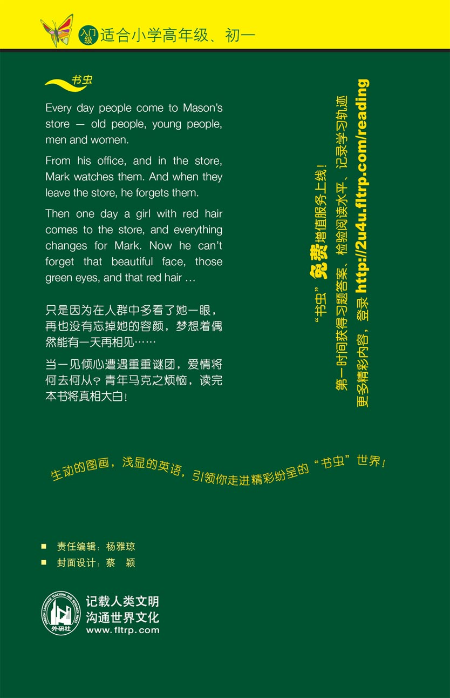